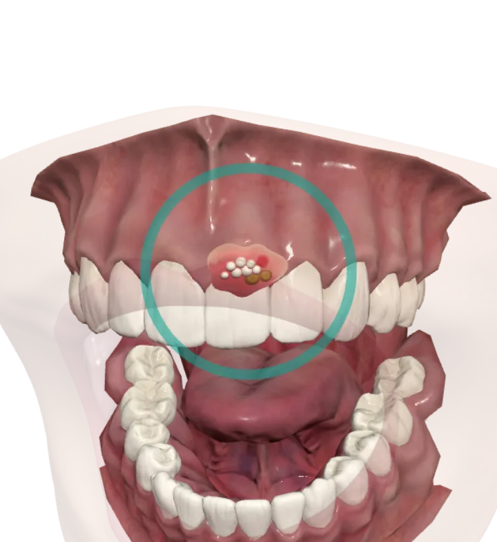

Виртуальный пациент
У каждого пациента свои болезни и лекарства. Осмотри полость рта в 3D, найди поражение и подбери препарат, который поможет и не навредит.
Пациент
Сопутствующие

Задание
Подобрать препарат с учётом болезней и лекарств пациента.
Разбор
По каждому из четырёх вариантов - почему подходит или нет.
Как проходит случай
Карта пациента
Возраст, хронические болезни, лекарства, которые он уже принимает, жалобы и данные осмотра.
Осмотр в 3D
Крути модель пальцем. Кольцо показывает, где поражение, а режим «Прозрачно» - что скрыто за губами и щеками. В терапии вместо 3D - схема тела.
Выбор препарата
Четыре варианта в случайном порядке. После ответа - разбор каждого и индивидуальный подход к этому пациенту.
Найди ошибку ИИ
ИИ-ассистент отвечает уверенно - и тогда, когда ошибается. В каждом случае есть его план лечения: отметь строки с ошибками, а разбор покажет, чем они опасны для этого пациента.
2. Для уменьшения боли - бензидамин в форме раствора для местного применения.
3. При сильной боли добавить кетопрофен в таблетках - он надёжнее снимет воспаление. на полях: ошибка найдена